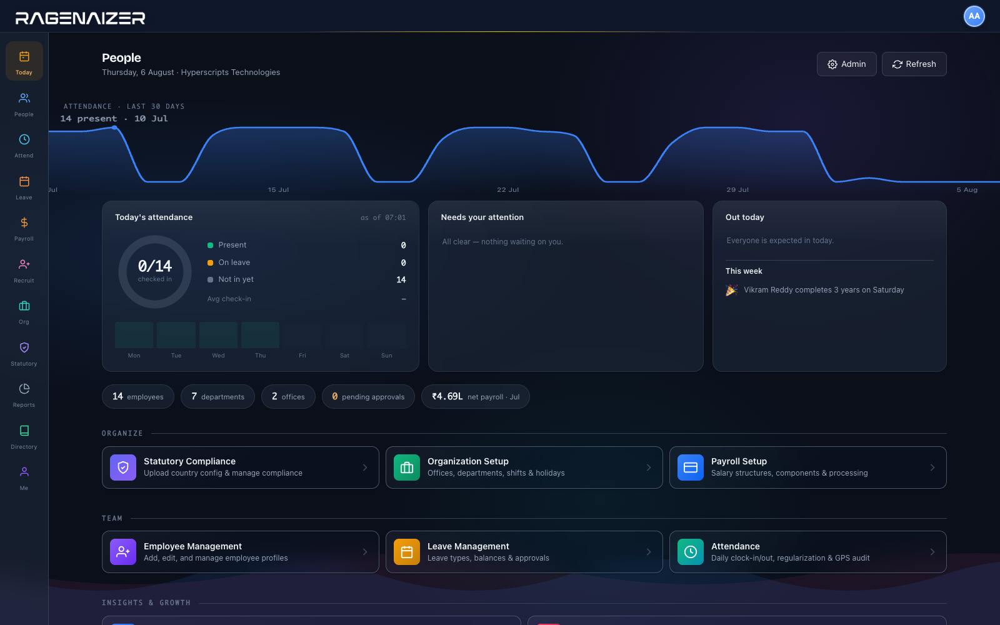

Every payslip keeps the arithmetic that produced it — the days counted, the proration applied, the rule behind each statutory deduction — and the engine asserts a named set of checks before it will let the run through.
Walk one payslip through the five steps the engine records
A payroll engine that hard-codes provident fund and professional tax can only ever run one country, and every rate change is a release. Here a country's rules are a versioned pack you upload — validated against a published schema before it is allowed anywhere near a payslip.
Contribution rules, tax slabs, regional levies, eligibility conditions and the formulas between them all live in the pack. Nothing about a country is compiled into the engine.
Packs are validated against a published schema on the way in. A malformed rule is rejected at upload, not discovered on the twenty-eighth of the month.
Each country keeps its version history and you activate the one that applies. When a rate changes mid-year, last quarter's payslips still explain themselves under the rules they were run on.
The rules that apply are resolved from the office an employee sits in, and arrears are computed against the jurisdiction in force at the time — not wherever they work today.
Attendance for the last thirty days, who is in today, what is waiting on you, and the month's payroll — before you have opened a report or asked anyone for a number.

The whole employment record in one place, ending where it should — a payroll run handed to finance as a journal rather than a spreadsheet emailed to the accountant.
Attendance, leave, loans and a salary revision all end up in the same payslip, and the payslip ends up in the books. Each step is a document with an owner, not a message somebody has to remember to forward.
No. The engine holds no country in its code. Provident-fund style contributions, income tax, regional levies and their eligibility conditions all come out of an uploaded country pack, and the calculator evaluates that pack's formulas.
India ships configured. Anywhere else is a pack to author and validate, not a change to the software.
Yes — that is the point of the page above. Every processed payslip stores a calculation proof: working days, days present, loss of pay, the proration factor, each earning, each statutory rule that ran (including the ones that did not apply), and the invariant assertions with the figures they were checked against.
Seven named invariants are asserted before a run proceeds. Two are hard stops — a negative net pay and a payslip without a recorded engine version will block processing outright. The other five are raised for review with their evidence attached.
Not by editing it. An approved or paid payslip is immutable; a correction is a new adjustment record against the next run. That is deliberate — a payslip somebody could quietly rewrite is not evidence of anything.
Directly. An approved run is handed to Accounts as a salary journal, with the statutory dues raised as bills to pay. Nobody re-keys a payroll figure, so there is no second version of the number to disagree with.
Transfers are kept as history with their effective dates. Arrears are then computed against the jurisdiction that applied at the time rather than the current one — which is one of the seven checks the engine asserts.
Geofenced clock-in against the office boundary with location pings recorded, or an NFC card tapped at the gate for shop floors and sites where phones are impractical. A missed punch becomes a regularisation request with an approver, not a silent edit.
Self-service carries payslips, leave balance, loan balance and profile-change requests that route to HR for review. Most of what lands in an HR inbox is a screen the person already has.
Give your team a number they can check themselves, and give payroll a month-end that ends.
This is one module of the business OS, not a point tool. The same seat opens Meetings, Mail, Chat, Drive, CRM, HR, Accounts, Projects and Learning — sharing one login, one permission model and one ledger. You are not buying an HRMS; you are putting the company on one system.